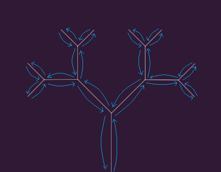

The blue arrows in the diagram illustrate the depth-first traversal and the recursive calls with alternating right and left rotations. The arrows represent the function calls, reductions in branch length, and overall branching structure described by the recursive algorithm.
Recursive Structure
The branch function draws a line and translates upwards by len.
If len is greater than 80, it performs the following steps:
1. Push the current transformation matrix onto the stack.
2. Rotate by ang and recursively call branch with len * 0.7.
3. Pop the transformation matrix off the stack.
4. Push the current transformation matrix again.
5. Rotate by -ang and recursively call branch with len * 0.7.
6. Pop the transformation matrix off the stack.
This structure creates a binary tree where each node has two children until len becomes 80 or less.
Try experimenting with this fractal tree code on the p5.js Web Editor!
For more unordered projects: github
var ang = PI/4;
function setup() {
createCanvas(500, 500);
//creating a slider that ranges from 0 to 2Pi(a full circle)
//with initial value set to pi/4 that is 45 degrees
slider = createSlider(0, TWO_PI,PI/4,0.01);
}
function draw() {
background(48,25,52);
ang = slider.value();
var len = 100;
stroke(255);
translate(width * 0.5,height);
branch(len);
}
function branch(len) {
line(0, 0, 0, - len);
translate(0,-len);
if(len > 4){ // if(len>80)
push();
rotate(ang);
branch(len * 0.7);
pop();
push();
rotate(-ang);
branch(len * 0.7);
pop();
}
}